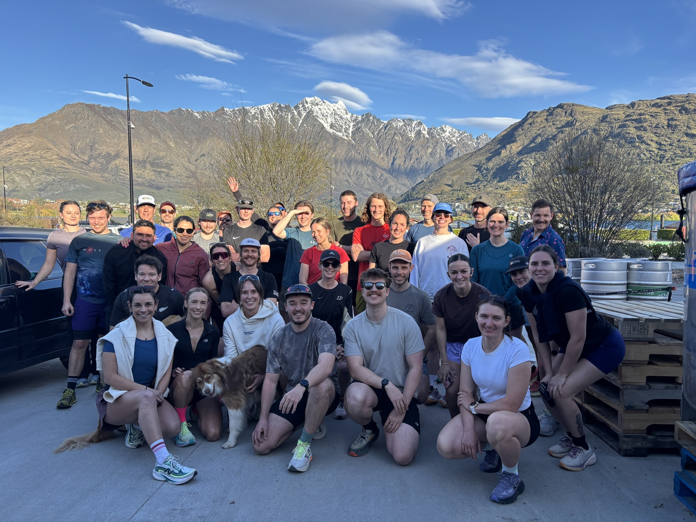

Wednesday
6:15pm
Social 5K
We meet at Altitude Brewing and run a social 5K from Queenstown Marina to the bridge. Then it’s back to Altitude for a drink, food, and a catch-up.
- Meet Altitude Brewing, Frankton Marina
- Route Marina to the bridge, flat lakefront trail
- Pace All paces, nobody runs alone
- After Drinks and Grub Club flatbreads at Altitude